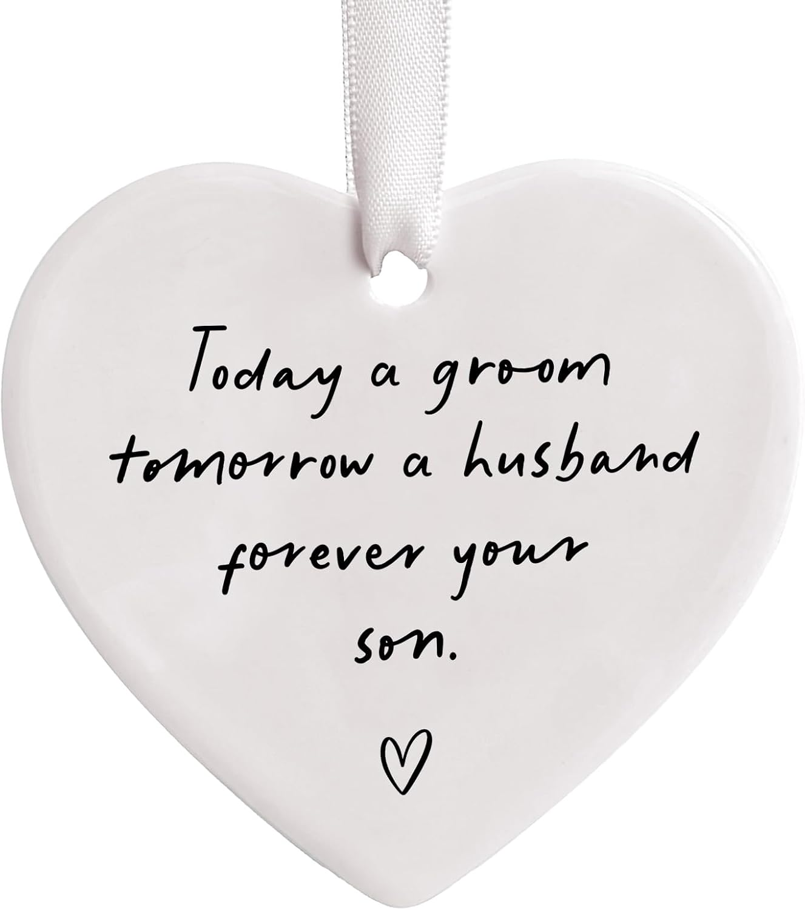
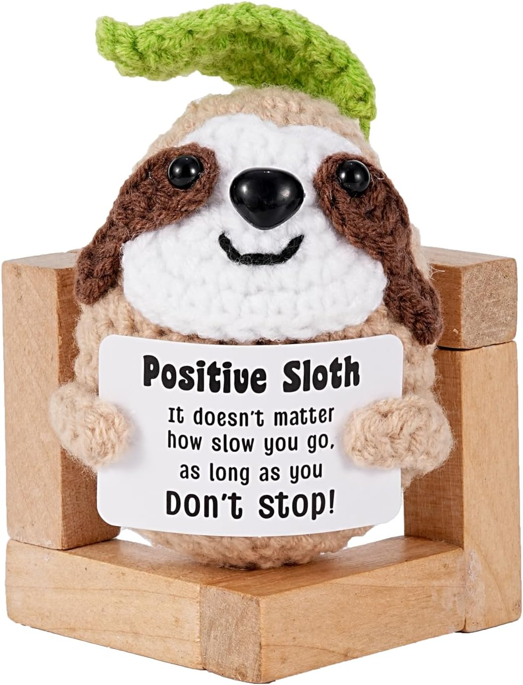
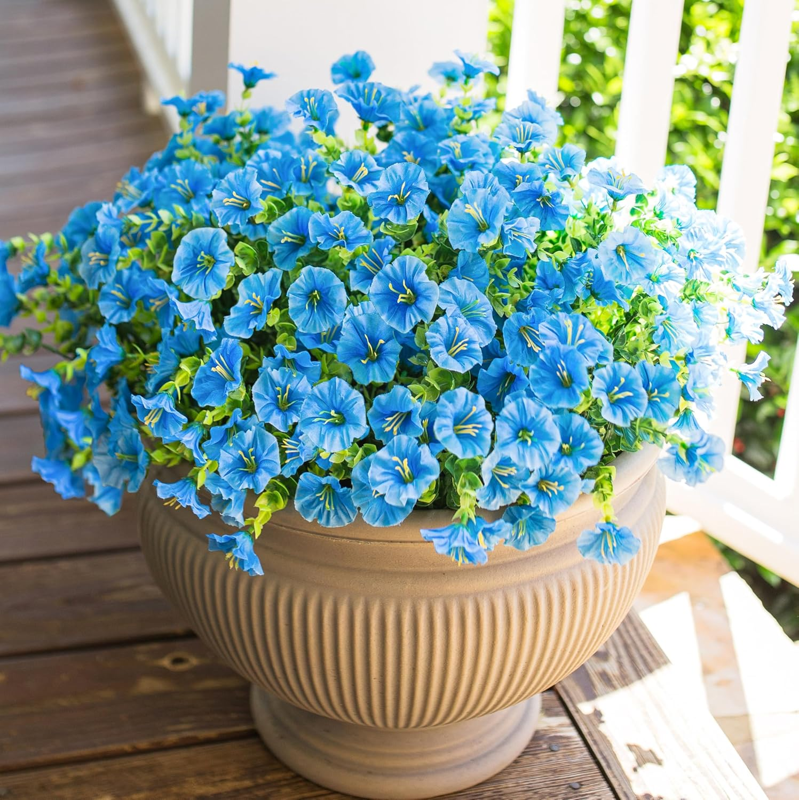
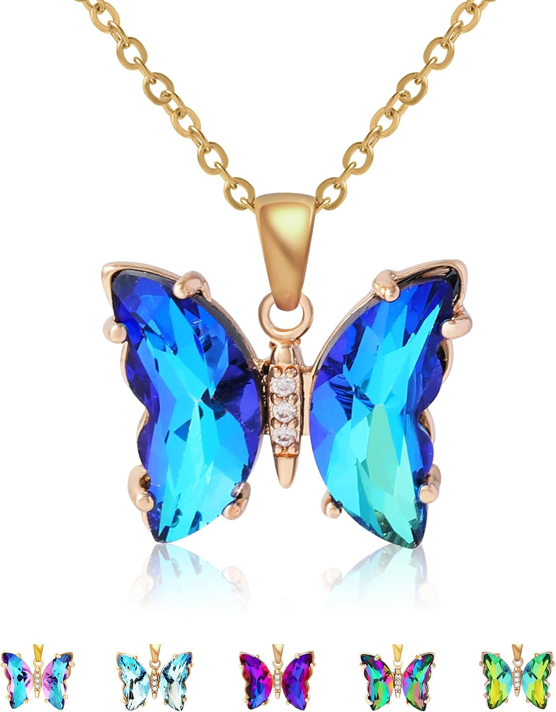
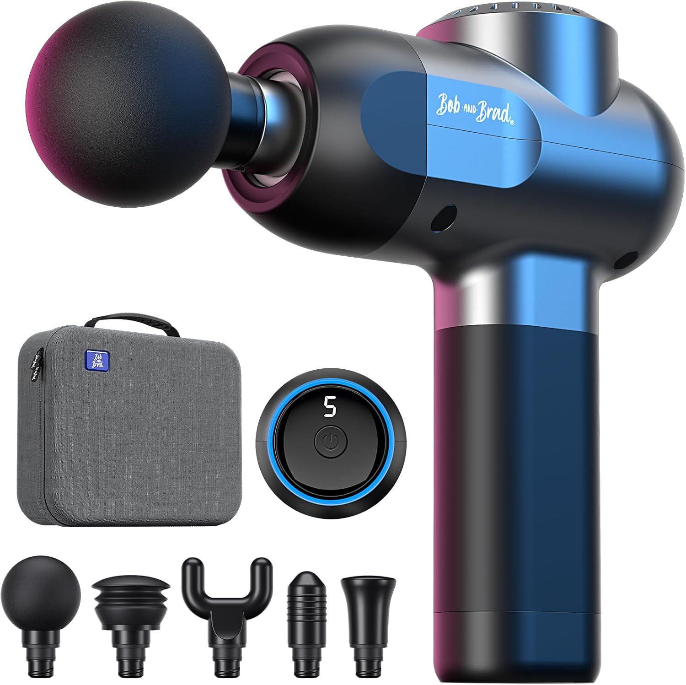

What Americans give vs. what they actually want — and where they overlap
Givers vs. Receivers — where they agree and where they don't
Never buy kitchen appliances or cleaning tools unless she explicitly asked — moms read it as 'you should do more housework.' Handmade cards + personalized jewelry = the perfect combination. Flowers are lovely but not enough on their own.
Products that hit the sweet spot between what you want to give and what she'll love





Never buy kitchen appliances unless she asked. A vacuum cleaner or blender reads as 'you should do more housework.' Save practical tools for non-occasion days — Mother's Day is about indulgence.
The handmade + real gift combo is unbeatable. A card made by the kids paired with a spa voucher covers both emotional and practical bases. Moms consistently rank handmade items as their sentimental favorite.
Smart home = time saved. A robot vacuum or smart home device gives back hours every week — the tech equivalent of 'a day off.' Moms consistently rank practical luxury above sentimental trinkets.
Mother's Day spending outpaces Father's Day by 25–35%. If you're budgeting equally, know that the societal pressure is higher for Mother's Day. A thoughtful $80 gift beats a rushed $200 one.
Never scramble for a last-minute gift again. We'll remind you 2 weeks early with curated picks.